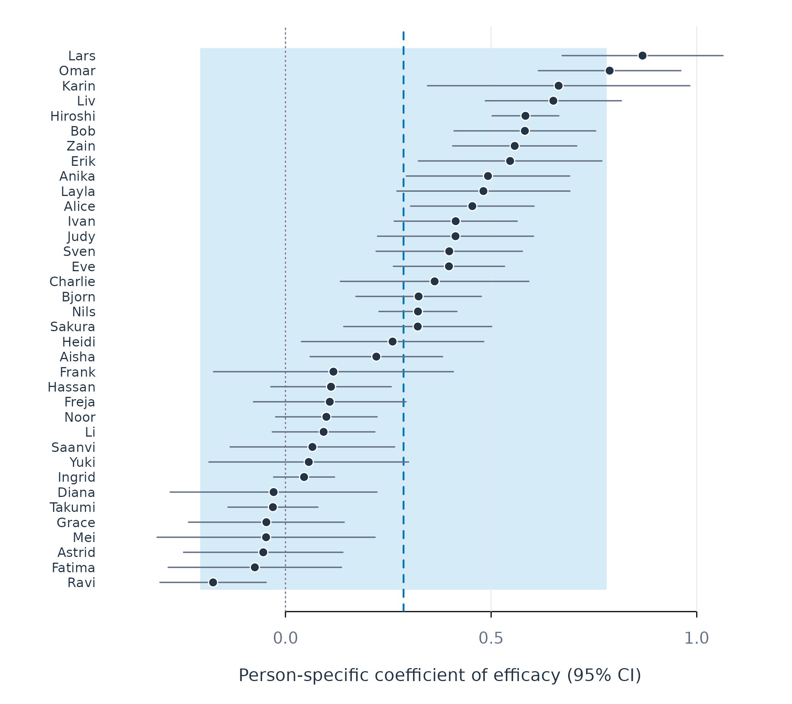
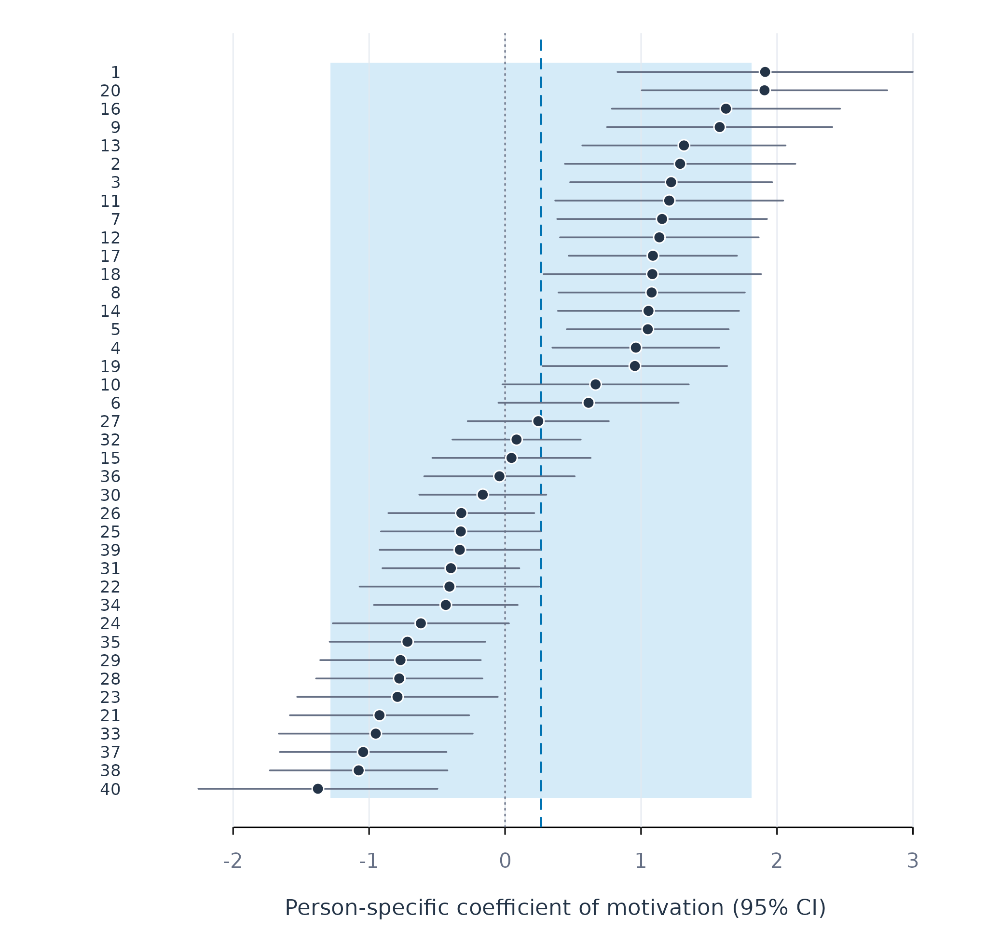
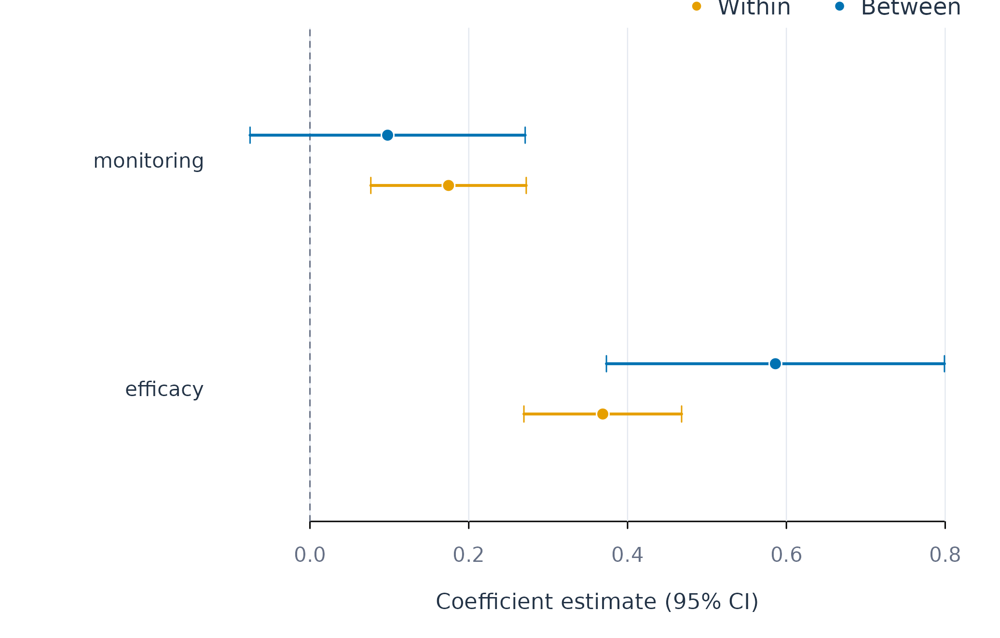

A regression model of intensive longitudinal data relates an outcome on each occasion to predictors measured on the same or an earlier occasion. The data contain many occasions for each of many persons, and the model can be estimated for the sample as a whole, for groups of persons, or for each person separately (López-Pernas et al. 2025). The three levels rest on different assumptions about how far persons share the same process.
A pooled model, also termed variable-centred, estimates one set of coefficients from the data of all persons. It assumes that the coefficients are identical across persons, or that their average is the quantity of interest. When persons differ in the strength or the direction of an association, the pooled coefficient describes the average of the sample and can misdescribe most of its members (Molenaar 2004). A subgroup model, also termed person-centred, partitions the persons into groups with similar coefficients and estimates one model per group. It assumes that the heterogeneity between persons takes the form of a small number of distinct processes. A person-specific model, also termed idiographic, estimates a separate model for each person from that person’s repeated measures. It treats each person as a separate system and requires enough occasions per person to estimate the coefficients with useful precision.
Estimating the three levels on the same data turns these assumptions
into testable claims. The comparison shows whether the person-specific
coefficients spread more than sampling error predicts, whether that
spread forms distinct groups, and how well the pooled coefficient
represents the individual persons. fit_lm() estimates
linear models, fit_glm() estimates generalized linear
models for binary and count outcomes, and the scope
argument of both selects the levels.
Linear models
The example models daily effort as a linear function of efficacy and
monitoring for the 36 learners in srl.
fit_lm() estimates the pooled model and one model per
learner. Each model is estimated on the first 124 days of each learner,
and the last 32 days are held out to evaluate predictions, as described
in the prediction vignette. The pooled model combines the occasions of
all learners, and occasions of the same learner are correlated, so its
standard errors are clustered on the learner (Liang and Zeger 1986).
lm_fit <- fit_lm(srl, y = "effort", x = c("efficacy", "monitoring"),
id = "name", time = "day",
scope = c("pooled", "individual"))
coefs(lm_fit, scope = "pooled")
#> scope model estimator subject subgroup term estimate std_error
#> 1 pooled lm native .all .all (Intercept) 27.9366297 4.64403728
#> 2 pooled lm native .all .all efficacy 0.4415288 0.05638120
#> 3 pooled lm native .all .all monitoring 0.1442609 0.04962956
#> statistic p_value
#> 1 6.015591 7.364519e-07
#> 2 7.831136 3.341992e-09
#> 3 2.906753 6.297403e-03In the pooled model, effort increases by 0.44 points per point of efficacy (SE = 0.056) and by 0.14 points per point of monitoring (SE = 0.050), with the other predictor held constant. These coefficients estimate the average association in the sample. The person-specific coefficients show whether this average describes the individual learners.
Person-specific coefficients
A person-specific model compares the days of one learner with each other, so its slope estimates the within-person association of that learner. The individual scope returns one slope per learner.
coefs(lm_fit, scope = "individual", term = "efficacy", sort_by = "estimate")
#> scope model estimator subject subgroup term estimate std_error
#> 1 individual lm native Ravi .none efficacy -0.17593246 0.06588666
#> 2 individual lm native Fatima .none efficacy -0.07446370 0.10746158
#> 3 individual lm native Astrid .none efficacy -0.05395851 0.09879602
#> 4 individual lm native Mei .none efficacy -0.04712054 0.13516693
#> 5 individual lm native Grace .none efficacy -0.04644204 0.09655782
#> 6 individual lm native Takumi .none efficacy -0.03050483 0.05578008
#> 7 individual lm native Diana .none efficacy -0.02878219 0.12819848
#> 8 individual lm native Ingrid .none efficacy 0.04525204 0.03775940
#> 9 individual lm native Yuki .none efficacy 0.05668378 0.12381736
#> 10 individual lm native Saanvi .none efficacy 0.06555265 0.10201863
#> 11 individual lm native Li .none efficacy 0.09274654 0.06361575
#> 12 individual lm native Noor .none efficacy 0.09948594 0.06293399
#> 13 individual lm native Freja .none efficacy 0.10768334 0.09462269
#> 14 individual lm native Hassan .none efficacy 0.11078082 0.07467859
#> 15 individual lm native Frank .none efficacy 0.11661877 0.14873655
#> 16 individual lm native Aisha .none efficacy 0.22096514 0.08212755
#> 17 individual lm native Heidi .none efficacy 0.26046909 0.11301647
#> 18 individual lm native Sakura .none efficacy 0.32162255 0.09173958
#> 19 individual lm native Nils .none efficacy 0.32217056 0.04833643
#> 20 individual lm native Bjorn .none efficacy 0.32370947 0.07776339
#> 21 individual lm native Charlie .none efficacy 0.36267341 0.11691383
#> 22 individual lm native Eve .none efficacy 0.39750968 0.06893480
#> 23 individual lm native Sven .none efficacy 0.39823498 0.09074932
#> 24 individual lm native Judy .none efficacy 0.41343609 0.09675454
#> 25 individual lm native Ivan .none efficacy 0.41383992 0.07628228
#> 26 individual lm native Alice .none efficacy 0.45430413 0.07660304
#> 27 individual lm native Layla .none efficacy 0.48129512 0.10733407
#> 28 individual lm native Anika .none efficacy 0.49238804 0.10132704
#> 29 individual lm native Erik .none efficacy 0.54619060 0.11380460
#> 30 individual lm native Zain .none efficacy 0.55734985 0.07696641
#> 31 individual lm native Bob .none efficacy 0.58204703 0.08782432
#> 32 individual lm native Hiroshi .none efficacy 0.58346849 0.04139897
#> 33 individual lm native Liv .none efficacy 0.65131368 0.08435553
#> 34 individual lm native Karin .none efficacy 0.66415300 0.16266735
#> 35 individual lm native Omar .none efficacy 0.78811972 0.08832974
#> 36 individual lm native Lars .none efficacy 0.86816107 0.09969809
#> statistic p_value
#> 1 -2.6702288 8.621903e-03
#> 2 -0.6929333 4.897016e-01
#> 3 -0.5461607 5.859611e-01
#> 4 -0.3486099 7.279880e-01
#> 5 -0.4809765 6.314018e-01
#> 6 -0.5468767 5.854706e-01
#> 7 -0.2245127 8.227370e-01
#> 8 1.1984312 2.330912e-01
#> 9 0.4578016 6.479160e-01
#> 10 0.6425556 5.217281e-01
#> 11 1.4579178 1.474538e-01
#> 12 1.5807982 1.165786e-01
#> 13 1.1380287 2.573568e-01
#> 14 1.4834348 1.405590e-01
#> 15 0.7840627 4.345355e-01
#> 16 2.6905118 8.143071e-03
#> 17 2.3047003 2.288778e-02
#> 18 3.5058210 6.392827e-04
#> 19 6.6651702 8.302748e-10
#> 20 4.1627490 5.918110e-05
#> 21 3.1020575 2.392108e-03
#> 22 5.7664584 6.329566e-08
#> 23 4.3882973 2.457258e-05
#> 24 4.2730409 3.865056e-05
#> 25 5.4251122 3.019172e-07
#> 26 5.9306278 2.933652e-08
#> 27 4.4840852 1.697788e-05
#> 28 4.8593941 3.568461e-06
#> 29 4.7993721 4.593763e-06
#> 30 7.2414684 4.484880e-11
#> 31 6.6274018 1.074165e-09
#> 32 14.0937925 2.740016e-27
#> 33 7.7210551 3.701746e-12
#> 34 4.0828908 8.019725e-05
#> 35 8.9224726 5.905342e-15
#> 36 8.7079007 1.895113e-14The person-specific efficacy slopes range from −0.18 (Ravi) to 0.87 (Lars), with a median of 0.32. Seven of the 36 learners have negative slopes, and 8 have a slope within 0.10 of the pooled value of 0.44. The observed spread of the slopes has two sources, true differences between learners and sampling error. Each slope rests on 124 days, and its standard error has a median of 0.09 across learners. The standard deviation of the observed slopes is 0.27, three times the typical standard error, so sampling error accounts for a small share of the spread.
Heterogeneity of the coefficients
The separation of true heterogeneity from sampling error is the
problem that random-effects meta-analysis addresses, with persons in the
role of studies (DerSimonian and Laird 1986). The
model treats each person-specific slope as an estimate of that person’s
true slope and the true slopes as draws from a normal distribution. It
estimates the mean of the true slopes, their standard deviation
,
and the share
of the observed variance that reflects true differences.
pool_coefs() applies the DerSimonian–Laird estimator to the
person-specific coefficients.
pool_coefs(lm_fit)
#> POOLED PERSON EFFECTS
#> Method random effects (DerSimonian-Laird)
#> People 36
#> Terms 3
#>
#> term k pooled 95% CI sd_obs tau I2 Q p
#> --------------------------------------------------------------------------------
#> (Intercept) 36 31.9792 [22.59, 41.37] 23.432 27.054 0.968 <1e-04
#> efficacy 36 0.2871 [0.20, 0.38] 0.271 0.252 0.912 <1e-04
#> monitoring 36 0.1957 [0.09, 0.30] 0.299 0.276 0.919 <1e-04
#>
#> sd_obs = observed spread; tau = spread of the true coefficients
#> I2 = share of the observed spread that is realFor efficacy, the mean of the true slopes is 0.29 (95% CI 0.20 to 0.38), is 0.25, and is 0.91, so 91% of the observed variance of the slopes reflects true differences between learners. Under the normal distribution of the true slopes, 95% of learners have a slope between −0.21 and 0.78, an interval that contains learners for whom efficacy and effort are unrelated as well as learners with a strong positive association.
The mean of the true slopes, 0.29, is smaller than the pooled coefficient, 0.44, for two reasons. The pooled coefficient also contains the between-person association, which is the larger of the two for efficacy, and with the person means separated the pooled within-person slope falls to 0.37, as the section on within-person and between-person effects shows. The pooled regression also weights each learner by the within-person variance of efficacy, and learners with more variable efficacy have steeper slopes (r = 0.27), whereas the random-effects model weights each learner by the precision of that learner’s slope.
plot_coefs(lm_fit, term = "efficacy")
Figure 1. Person-specific efficacy slopes with 95% confidence intervals. The dashed line marks the mean of the true slopes, and the shaded band covers the interval expected to contain 95% of the true slopes.
Subgroups
Person-centred research assumes that the processes of many persons can be summarised by a small number of types, each type representing persons who share the same process. Effort can depend on efficacy for the learners of one type and on monitoring for the learners of another. When such types exist, a model per subgroup describes each process more faithfully than the pooled model and estimates it more precisely than the person-specific models, because each subgroup combines the occasions of several persons. The heterogeneity found above can take two forms. The slopes can form distinct clusters, which supports types, or vary continuously around a single mean, which supports a single population with individual differences in degree. Clustering methods return groups in both cases, so the form of the heterogeneity is tested before any grouping is interpreted (Bauer and Curran 2003).
test_subgroups() compares mixture models with one to
four components for the person-specific slopes of efficacy and
monitoring and selects the number of components by the Bayesian
information criterion (BIC), on which lower values indicate a better
balance of fit and complexity. A single component, the hypothesis of one
population, is among the models compared.
subgroup_test <- test_subgroups(srl, y = "effort",
x = c("efficacy", "monitoring"),
id = "name", time = "day")
subgroup_test
#> Idiographic Subgroup Test
#> People: 36
#> Coefficients: efficacy, monitoring
#> Searched: k = 1..4, covariance models EII/VII/EEI/VVI/EEE/VVV
#>
#> VERDICT: no subgroups detected (one population fits best)
#> Clustering these people anyway will still return
#> groups -- they will not mean anything.
#>
#> Use as.data.frame() for the BIC table.
as.data.frame(subgroup_test) |> head()
#> k model loglik npar bic selected
#> 1 1 EII -101.14942 3 213.0494 TRUE
#> 2 1 VII -101.14942 3 213.0494 FALSE
#> 3 1 EEI -101.14942 4 216.6329 FALSE
#> 4 1 VVI -101.14942 4 216.6329 FALSE
#> 5 2 EEI -96.59769 7 218.2800 FALSE
#> 6 1 EEE -100.37905 5 218.6757 FALSEThe one-component model has the lowest BIC (213.0), and the best
two-component model has a BIC of 218.3. The learners in srl
therefore form a single population whose slopes differ continuously, and
the person-specific models are the appropriate description of these
differences.
Generalized linear models
Many outcomes of intensive longitudinal studies are binary or counts,
such as whether a learner submits an assignment on a given day or how
many messages a learner posts. A linear model for such outcomes predicts
values outside the possible range and assumes a constant residual
variance, whereas the variance of a binary or count outcome depends on
its mean. A generalized linear model relates the predictors to a
transformation of the expected outcome through a link function and takes
the variance from the distribution of the outcome (McCullagh and Nelder
1989). For a binary outcome, the logistic model relates the
predictors to the log-odds of the outcome, and a slope is the change in
log-odds per unit of the predictor. fit_glm() estimates
these models at the same levels as fit_lm(), with
family = "binomial" for binary outcomes,
"poisson" for counts, and "negbin" for counts
whose variance exceeds their mean.
The submissions data are simulated, so that the true
process of each learner is known and the estimates at each level can be
compared with it. Forty learners are observed on 80 days, with a binary
record of whether an assignment was submitted. The learners belong to
two types. For the 20 engaged learners, the log-odds of submitting rise
with daily motivation, with a slope of 1.2, and for the 20 avoidant
learners they fall, with a slope of −0.6. The slope of each learner
varies around the slope of the type with a standard deviation of 0.15,
and the type column records the true type.
head(submissions)
#> learner day type motivation submitted
#> 1 1 1 engaged 1.3284155 1
#> 2 1 2 engaged 1.5540090 1
#> 3 1 3 engaged -0.3463324 0
#> 4 1 4 engaged 0.3191570 1
#> 5 1 5 engaged -2.3165814 0
#> 6 1 6 engaged -0.1089408 0Pooled coefficients
pooled_glm <- fit_glm(submissions, y = "submitted", x = "motivation",
id = "learner", family = "binomial",
time = "day", scope = "pooled")
coefs(pooled_glm)
#> scope model estimator subject subgroup term estimate std_error
#> 1 pooled binomial native .all .all (Intercept) -0.1210932 0.08797027
#> 2 pooled binomial native .all .all motivation 0.2297620 0.12060291
#> statistic p_value
#> 1 -1.376524 0.16865944
#> 2 1.905111 0.05676559The pooled motivation slope is 0.23 (SE = 0.12, p = .057). The pooled model averages two processes of opposite sign, and its slope describes neither type. A pooled analysis of these data would conclude that motivation is at most weakly related to submission, although motivation is strongly associated with submission for every learner, positively for half of the learners and negatively for the other half.
Subgroups
The simulated data contain two types, and the subgroup analysis is
expected to recover them. find_subgroups() with
k = "auto" chooses the number of subgroups by the same
mixture comparison as test_subgroups() and assigns the
learners to subgroups by their person-specific slopes. The assignment is
repeated on 30 resamples of the occasions, and the stability of the
partition is the proportion of resamples in which each learner is
grouped with the same learners. Stability measures the reproducibility
of a partition, which is distinct from its validity, since a single
continuous population divided at the same point also yields a stable
partition.
set.seed(1)
submission_groups <- find_subgroups(submissions, y = "submitted",
x = "motivation", id = "learner",
time = "day", k = "auto", reps = 30)
submission_groups
#> Idiographic Subgroups
#> Method: effect_clustering
#> Subgroups: 2 (chosen automatically)
#> People: 40
#> Sizes: g1=21, g2=19
#> Stability: 0.92 (how reproducible the partition is --
#> NOT evidence that the subgroups are real)
#>
#> VERDICT: 2 subgroups (mixture BIC beats one group by 23.9: very strong evidence)
#>
#> Use groups(), test_subgroups(), fit_subgroups()Two subgroups are selected, with a BIC lower by 23.9 than that of a
single population, and the stability of the partition is 0.92. The
partition matches the simulated types for 39 of the 40 learners. The 20
avoidant learners and 1 engaged learner form the first subgroup, and the
remaining 19 engaged learners form the second. The assignment enters
fit_glm() through the subgroup argument, so
that the pooled, subgroup and person-specific models are estimated on
the same data.
glm_fit <- fit_glm(submissions, y = "submitted", x = "motivation",
id = "learner", family = "binomial", time = "day",
scope = c("pooled", "subgroup", "individual"),
subgroup = submission_groups)
coefs(glm_fit, scope = "subgroup")
#> scope model estimator subject subgroup term estimate
#> 1 subgroup binomial native .all g1 (Intercept) -0.2698968
#> 2 subgroup binomial native .all g1 motivation -0.4353766
#> 3 subgroup binomial native .all g2 (Intercept) -0.1201561
#> 4 subgroup binomial native .all g2 motivation 1.1744905
#> std_error statistic p_value
#> 1 0.09741277 -2.770651 5.594442e-03
#> 2 0.10230837 -4.255533 2.085518e-05
#> 3 0.08109624 -1.481649 1.384338e-01
#> 4 0.06605776 17.779749 1.014329e-70The subgroup motivation slopes are −0.44 and 1.17, against generating slopes of −0.6 and 1.2. The subgroup analysis recovers the two processes that the pooled slope averaged away. The slope of the avoidant subgroup lies closer to zero for two reasons. The person-specific slopes of the avoidant learners average −0.56, and a model fitted to the 20 avoidant learners alone gives −0.51. The engaged learner assigned to the avoidant subgroup moves the slope further toward zero.
Person-specific coefficients
The person-specific models estimate the slope of each learner from that learner’s first 64 days, with the last 16 days held out.
coefs(glm_fit, scope = "individual", term = "motivation", sort_by = "estimate")
#> scope model estimator subject subgroup term estimate
#> 1 individual binomial native 40 .none motivation -1.37624783
#> 2 individual binomial native 38 .none motivation -1.07654492
#> 3 individual binomial native 37 .none motivation -1.04348110
#> 4 individual binomial native 33 .none motivation -0.95085967
#> 5 individual binomial native 21 .none motivation -0.92332346
#> 6 individual binomial native 23 .none motivation -0.79106709
#> 7 individual binomial native 28 .none motivation -0.77808416
#> 8 individual binomial native 29 .none motivation -0.76873372
#> 9 individual binomial native 35 .none motivation -0.71768974
#> 10 individual binomial native 24 .none motivation -0.61911355
#> 11 individual binomial native 34 .none motivation -0.43571092
#> 12 individual binomial native 22 .none motivation -0.40896956
#> 13 individual binomial native 31 .none motivation -0.39829537
#> 14 individual binomial native 39 .none motivation -0.33277437
#> 15 individual binomial native 25 .none motivation -0.32523418
#> 16 individual binomial native 26 .none motivation -0.32152487
#> 17 individual binomial native 30 .none motivation -0.16367880
#> 18 individual binomial native 36 .none motivation -0.04107140
#> 19 individual binomial native 15 .none motivation 0.04752350
#> 20 individual binomial native 32 .none motivation 0.08457889
#> 21 individual binomial native 27 .none motivation 0.24431938
#> 22 individual binomial native 6 .none motivation 0.61402089
#> 23 individual binomial native 10 .none motivation 0.66592781
#> 24 individual binomial native 19 .none motivation 0.95483789
#> 25 individual binomial native 4 .none motivation 0.96193326
#> 26 individual binomial native 5 .none motivation 1.04983624
#> 27 individual binomial native 14 .none motivation 1.05494868
#> 28 individual binomial native 8 .none motivation 1.07810338
#> 29 individual binomial native 18 .none motivation 1.08337945
#> 30 individual binomial native 17 .none motivation 1.08746481
#> 31 individual binomial native 12 .none motivation 1.13480749
#> 32 individual binomial native 7 .none motivation 1.15516965
#> 33 individual binomial native 11 .none motivation 1.20721594
#> 34 individual binomial native 3 .none motivation 1.22151136
#> 35 individual binomial native 2 .none motivation 1.28773478
#> 36 individual binomial native 13 .none motivation 1.31565920
#> 37 individual binomial native 9 .none motivation 1.57844380
#> 38 individual binomial native 16 .none motivation 1.62468680
#> 39 individual binomial native 20 .none motivation 1.90811934
#> 40 individual binomial native 1 .none motivation 1.91277263
#> std_error statistic p_value
#> 1 0.4485916 -3.0679302 0.0021554696
#> 2 0.3330985 -3.2319117 0.0012296505
#> 3 0.3126110 -3.3379535 0.0008439786
#> 4 0.3638110 -2.6136088 0.0089591551
#> 5 0.3361402 -2.7468401 0.0060172470
#> 6 0.3762876 -2.1022935 0.0355275712
#> 7 0.3120727 -2.4932783 0.0126569602
#> 8 0.3011687 -2.5525021 0.0106952252
#> 9 0.2919978 -2.4578605 0.0139767471
#> 10 0.3304076 -1.8737870 0.0609597827
#> 11 0.2697114 -1.6154708 0.1062087895
#> 12 0.3370252 -1.2134688 0.2249506315
#> 13 0.2568290 -1.5508191 0.1209450316
#> 14 0.3006467 -1.1068617 0.2683537115
#> 15 0.2996294 -1.0854547 0.2777203031
#> 16 0.2736620 -1.1748978 0.2400356057
#> 17 0.2382671 -0.6869551 0.4921110511
#> 18 0.2822659 -0.1455061 0.8843113363
#> 19 0.2968993 0.1600661 0.8728290221
#> 20 0.2407232 0.3513534 0.7253232681
#> 21 0.2646522 0.9231715 0.3559178576
#> 22 0.3380394 1.8164179 0.0693062860
#> 23 0.3495095 1.9053209 0.0567383674
#> 24 0.3461373 2.7585524 0.0058057989
#> 25 0.3131100 3.0721899 0.0021249447
#> 26 0.3036189 3.4577440 0.0005447188
#> 27 0.3397214 3.1053348 0.0019006378
#> 28 0.3495837 3.0839636 0.0020426261
#> 29 0.4076014 2.6579387 0.0078620184
#> 30 0.3153980 3.4479127 0.0005649367
#> 31 0.3727702 3.0442548 0.0023325750
#> 32 0.3934850 2.9357401 0.0033275298
#> 33 0.4275811 2.8233614 0.0047522968
#> 34 0.3789641 3.2232905 0.0012672695
#> 35 0.4323771 2.9782681 0.0028988233
#> 36 0.3813290 3.4501947 0.0005601824
#> 37 0.4223806 3.7370181 0.0001862156
#> 38 0.4280768 3.7953165 0.0001474552
#> 39 0.4606353 4.1423642 0.0000343744
#> 40 0.5540106 3.4525919 0.0005552283The person-specific slopes range from −1.38 to 1.91. They average −0.56 for the avoidant learners and 1.15 for the engaged learners, close to the generating values, so the person-specific level recovers both processes from the data of each learner alone. The cost is precision. A logistic slope estimated from 64 binary observations has a median standard error of 0.34, against 0.07 and 0.10 for the subgroup slopes, which combine the days of about 20 learners each.
Heterogeneity of the coefficients
The random-effects model of pool_coefs() summarises the
person-specific slopes by a normal distribution.
pool_coefs(glm_fit)
#> POOLED PERSON EFFECTS
#> Method random effects (DerSimonian-Laird)
#> People 40
#> Terms 2
#>
#> term k pooled 95% CI sd_obs tau I2 Q p
#> --------------------------------------------------------------------------------
#> (Intercept) 40 -0.1641 [-0.30, -0.03] 0.423 0.261 0.409 0.00446
#> motivation 40 0.2641 [-0.04, 0.57] 0.959 0.790 0.853 < 1e-04
#>
#> sd_obs = observed spread; tau = spread of the true coefficients
#> I2 = share of the observed spread that is realThe mean of the true slopes is 0.26 (95% CI −0.04 to 0.57),
is 0.79, and
is 0.85. The large
reflects the distance between the two types, since the slopes come from
a bimodal distribution with modes near −0.6 and 1.2. The normal
distribution places its mean between the two modes, at a value that
describes neither type, as the pooled slope does. The test of subgroups
therefore determines whether the normal summary is adequate. It suits a
single population with continuous differences, as in srl,
and misdescribes a population of distinct types, as in
submissions.
plot_coefs(glm_fit, term = "motivation")
Figure 2. Person-specific motivation slopes with 95% confidence intervals. The dashed line marks the mean of the true slopes, and the shaded band covers the interval expected to contain 95% of the true slopes under a normal distribution.
Assumptions of the models
Each model rests on assumptions about the data. A violated assumption biases the coefficients or makes their standard errors too small.
Clustered standard errors allow the occasions of one person to be
correlated with each other and assume that different persons are
independent. Learners in the same classroom share the influence of their
teacher, so their outcomes are correlated, and standard errors clustered
on the learner then understate the uncertainty. For such designs,
fit_within_between() clusters the standard errors on the
classroom through its cluster argument, while
fit_lm() and fit_glm() cluster on the person
only.
A person-specific model is estimated from the occasions of one
person, so its precision depends on the number of occasions of that
person. A person with fewer than 10 complete estimation occasions
receives no person-specific model, and failures() lists
that person with the reason. A binary outcome carries less information
per occasion than a continuous outcome, so a logistic model needs more
occasions than a linear model for the same precision. A person who
submits an assignment on every day, or on none, gives no information
about the effect of motivation, because the outcome never varies.
The family of a generalized linear model states how the variance of
the outcome relates to its mean. The binomial family applies to an
outcome with two values, coded 0 and 1 or as a factor with two levels.
The Poisson family applies to counts whose variance equals their mean.
Counts of behaviour usually vary more than the Poisson family allows,
and Poisson standard errors are then too small. The negative binomial
family ("negbin") estimates this extra variance.
Comparing slopes across persons, as pool_coefs() and
find_subgroups() do, assumes that every slope is measured
in the same unit. This holds when every person has the same predictors,
coded and transformed in the same way. Person scaling breaks it, because
it divides the scores of each person by a different standard deviation,
so a slope of 0.5 means a different change in raw scores for each
person.
Within-person and between-person effects
A person-specific model estimates the within-person association of each person, whereas a pooled model of raw scores mixes the within-person and the between-person association. The within-between model separates the two associations in one pooled regression. Each predictor is decomposed into the person mean and the deviation from it, and both components enter the model, which therefore estimates a within-person slope and a between-person slope for each predictor (Curran and Bauer 2011; Hoffman and Stawski 2009). The difference between the two slopes is the contextual effect, the association of the person mean with the outcome beyond the association implied by the within-person slope (Mundlak 1978). The vignette on preparing panel data derives the decomposition in detail.
wb_fit <- fit_within_between(srl, y = "effort",
x = c("efficacy", "monitoring"),
id = "name", time = "day")
contextual(wb_fit)
#> variable within between contextual S.E. 95% CI p
#> --------------------------------------------------------------------------------
#> efficacy 0.3688 0.5862 0.2174 0.1015 [0.011, 0.423] 0.0392
#> monitoring 0.1745 0.0978 -0.0767 0.0988 [-0.277, 0.124] 0.4427
#>
#> scope = pooled, model = within_between, estimator = ols, subject = .all, subgroup = .allFor efficacy, the within-person slope is 0.37 and the between-person slope is 0.59. The contextual effect of 0.22 (95% CI 0.01 to 0.42, p = .039) indicates that learners with a higher mean efficacy report more effort than their daily relation between efficacy and effort predicts. For monitoring, the within-person slope is 0.17 and the between-person slope is 0.10, and the contextual effect of −0.08 (95% CI −0.28 to 0.12, p = .44) is consistent with equal slopes at the two levels. With two contextual effects tested, the Benjamini–Hochberg adjusted p-value for efficacy is .078 (Benjamini and Hochberg 1995), and the evidence for a contextual effect of efficacy is weak.
plot_components(wb_fit)
Figure 3. Within-person and between-person slopes with 95% confidence intervals.
Assumptions of the decomposition
The decomposition requires variation at both levels. A variable whose
person means are nearly equal has no between-person component to
estimate, and a variable that is constant within every person has no
within-person component. variance_components(), described
in the vignette on describing persons, reports the share of variance at
each level.
The two slopes differ in what can bias them. The within-person slope compares occasions of the same person, so any stable characteristic of the person, measured or unmeasured, cancels from it. Variables that change from day to day and affect both predictor and outcome, such as sleep or workload, still bias it. The between-person slope compares persons, and any stable characteristic that differs between persons and affects the outcome, such as prior achievement, enters it. The contextual effect inherits this bias, so it is an association between person means and has no causal interpretation without further assumptions.
Choice of level
The level of a regression analysis follows from the research question
and from the evidence about heterogeneity. A question about the average
association in a population is answered by the pooled model, and the
within-between model adds whether that association holds within persons,
between persons, or at both levels. A question about the process of each
person is answered by the person-specific models. Their coefficients are
summarised by the random-effects model when they form a single
population, as in srl, and by subgroup models when they
form distinct types, as in submissions. The heterogeneity
statistics
and
and the test of subgroups show which of these descriptions the data
support.
Person-specific coefficients estimated from short series are
imprecise, and shrinkage toward the population mean improves their
accuracy, as the vignette on pooling and shrinkage shows with
pool_coefs() and shrink_coefs(). The
prediction vignette evaluates the models on held-out occasions, and the
vignette on subgroups and effects covers subgroup discovery and
heterogeneous treatment effects in detail.